ВЕДОМСТВЕННЫЕ СТРОИТЕЛЬНЫЕ НОРМЫ
УСТАНОВКИ СОЛНЕЧНОГО
ГОРЯЧЕГО ВОДОСНАБЖЕНИЯ
НОРМЫ ПРОЕКТИРОВАНИЯ
ВСН 52-86
Госгражданстрой
МОСКВА 2000
РАЗРАБОТАНЫ КиевЗНИИЭП Госгражданстроя (канд. техн. наук А.Р. Ферт - руководитель темы, кандидаты техн. наук Н.А. Лазарев, М.Д. Рабинович, В.М. Хаванский), ТашЗНИИЭП Госгражданстроя (инженеры А.В. Бубнов, Ю.К. Рашидов), ТбилЗНИИЭП Госгражданстроя (инженеры Э.В. Кушашвили, З.М. Чачава), ЦНИИЭП инженерного оборудования Госгражданстроя (канд. техн. наук И.М. Васильева).
ВНЕСЕНЫ КиевЗНИИЭП Госгражданстроя
ПОДГОТОВЛЕНЫ К УТВЕРЖДЕНИЮ Управлением инженерного оборудования населенных мест (канд. техн. наук А.И. Кунахович, инженеры Н.Н. Бахрушин, В.Ф. Пучков), Управлением по научным исследованиям и нормированию Госгражданстроя (инженеры Э.П. Рупасов, Т.С. Фомичева).
ВВОДЯТСЯ ВПЕРВЫЕ
Согласованы Госстроем СССР 15 октября 1986 г. и Минздравом УССР 19 ноября 1985 г.
|
Государственный комитет по гражданскому строительству и архитектуре при Госстрое СССР (Госгражданстрой) |
Ведомственные строительные нормы |
ВСН 52-86 Госгражданстрой |
|
Установки солнечного горячего водоснабжения. Нормы проектирования |
- |
1.1. Настоящие Нормы распространяются на проектирование вновь строящихся и реконструируемых установок солнечного горячего водоснабжения с плоскими солнечными коллекторами для хозяйственно-бытовых нужд жилых и общественных зданий, а также вспомогательных зданий и помещений предприятий.
При проектировании установок солнечного горячего водоснабжения следует выполнять требования, предусмотренные СНиП 2.04.01-85.
1.2. Настоящие Нормы не распространяются на проектирование тепловых пунктов, а также систем горячего водоснабжения для подачи воды:
на технологические нужды предприятий, зданий и сооружений;
для лечебных процедур в зданиях лечебно-профилактических учреждений и других зданиях, а также на комплектные бытовые установки солнечного горячего водоснабжения, выпускаемые промышленностью по соответствующим техническим условиям.
1.3. Установки солнечного горячего водоснабжения, как правило, следует применять в районах СССР, расположенных южнее 50° с.ш.
Методика определения экономической целесообразности применения этих установок приведена в прил. 1.
1.4. Настоящие Нормы устанавливают:
основные требования к конструкциям и оборудованию;
методику теплотехнического расчета установки солнечного горячего водоснабжения;
методику определения технико-экономической целесообразности использования солнечной энергии для нужд горячего водоснабжения.
|
Внесены КиевЗНИИЭП Госгражданстроя |
Утверждены приказом Государственного комитета по гражданскому строительству и архитектуре при Госстрое СССР от 17 декабря 1986 г. № 429 |
Срок введения в действие с 1 июля 1987 г. |
1.5. В проектах установок солнечного горячего водоснабжения жилых и общественных зданий, а также вспомогательных зданий и помещений предприятий должно быть указано, что в целях надежности работы этих установок следует производить их регулировку и наладку для обеспечения оптимального режима работы насосов, соответствующую настройку приборов автоматизации, принятых в проекте установок, а также предусматривать указания о мероприятиях по технической эксплуатации этих установок.
1.6. Электрические устройства установок солнечного горячего водоснабжения должны отвечать требованиям Правил устройства электроустановок.
2.1. Для установок солнечного горячего водоснабжения следует применять плоские проточные солнечные коллекторы с одинарным или двойным остеклением.
2.2. В установках солнечного горячего водоснабжения следует использовать водяные насосы, применяемые в системах горячего водоснабжения и отопления зданий.
При применении в солнечных установках горячего водоснабжения антифризов следует применять насосы типа ЦВЦ или другие насосы аналогичной герметичности.
2.3. При установке циркуляционных насосов в жилых домах следует применять малошумные насосы или принимать меры к снижению шума и вибраций до норм, допустимых СНиП II-12-77.
2.4. Передача теплоты из одного контура установки солнечного горячего водоснабжения в другой осуществляется скоростными теплообменниками и баками-аккумуляторами с теплообменниками.
При расчете поверхностей теплообменников следует принимать величину среднелогарифмического температурного напора, но не более 5 °С.
3.1. Выбор установок солнечного горячего водоснабжения в зависимости от типа и назначения здания производится по таблице.
|
№ п.п. |
Тип зданий |
Установки солнечного горячего водоснабжения |
|
1. |
Кемпинги, летние душевые, жилые дома с котельной для отопления |
Сезонные без дублера |
|
2. |
Пансионаты сезонного действия, пионерские лагеря |
Сезонные с дублером для покрытия расхода горячей воды на технологические нужды |
|
3. |
Больницы, гостиницы, санатории, детские сады, бани, прачечные и предприятия общественного питания |
Сезонные со 100 % обеспеченностью горячей водой от дублера |
|
4. |
Здания, подключенные к постоянно-действующим системам теплоснабжения |
Сезонные и круглогодичные с использованием источника энергии в качестве догревателя |
|
5. |
Жилые здания с автономным теплоснабжением |
Сезонные и круглогодичные с дублированием от автономного источника тепла |
3.2. Основные принципиальные схемы установок солнечного горячего водоснабжения приведены в прил. 2.
3.3. Установки солнечного горячего водоснабжения с естественной циркуляцией, как правило, следует применять при площади солнечных коллекторов до 10 м2.
3.4. Сезонные установки без дублирующего источника теплоты с принудительной циркуляцией должны работать в режиме с постоянной температурой горячей воды.
3.5. В качестве теплоносителя в теплоприемном контуре двухконтурных установок следует применять, как правило, деаэрированную воду или нетоксичный и негорючий антифриз. Допускается применение антифризов на основе этиленгликоля. При этом следует применять баки-аккумуляторы с двумя независимыми теплообменниками или трехконтурную установку.
3.6. Установки солнечного горячего водоснабжения должны быть взаимосвязаны с дублирующими тепловыми источниками (котельной, ТЭЦ, электрокотлом и т.п.), используемыми в качестве догревателя воды предварительно нагретой установкой солнечного горячего водоснабжения.
3.7. В летних душевых располагаемый (свободный) напор у смесителя душа следует принимать не менее 1,5 м. При этом к каждому смесителю должна осуществляться самостоятельная подводка горячей и холодной воды, коллекторное распределение воды в этом случае не допускается.
3.8. Пространственное размещение солнечных коллекторов следует определять с учетом типа застройки, ландшафтных и климатических условий, возможностей строительной площадки.
Солнечные коллекторы, размещаемые на кровле зданий, должны располагаться на опорах. Расстояние от кровли до низа солнечного коллектора должно обеспечивать возможность ремонта кровли.
3.9. Оптимальной ориентацией солнечных коллекторов считается юг с возможными отклонениями на восток до 20°, на запад - до 30°.
Угол наклона солнечных коллекторов к горизонту следует принимать для установки, работающей круглый год, равным широте местности; в летний период - широте местности минус 15°; в отопительный период - широте местности плюс 15°.
3.10. Расчет опорных конструкций под солнечные коллекторы следует вести с учетом ветровой и снеговой нагрузок.
При строительстве установок солнечного горячего водоснабжения в сейсмических районах конструкции следует проектировать с учетом сейсмических воздействий.
3.11. При проектировании установок солнечного горячего водоснабжения на просадочных и вечномерзлых грунтах следует предусматривать, чтобы грунты под зданиями и сооружениями не замачивались при сбросе и утечке теплоносителя.
3.12. Следует предусматривать тепловую изоляцию баков-аккумуляторов, теплообменников и трубопроводов.
Термическое сопротивление тепловой изоляции трубопроводов и оборудования должно обеспечивать потерю тепла не более 5 %.
3.13. Следует предусматривать устройства для опорожнения и заполнения гелиоприемного контура.
В каждой установке солнечного горячего водоснабжения следует предусматривать устройства для удаления воздуха из нее.
3.14. В установках с естественной циркуляцией следует:
трубопроводы, подающие воду в солнечные коллекторы, а также водопроводную воду, присоединять к нижней части бака-аккумулятора;
трубопроводы, отводящие нагретую воду от солнечных коллекторов и подающие ее в систему горячего водоснабжения, присоединять к верхней части бака-аккумулятора. Для соединения солнечных коллекторов с баком-аккумулятором следует использовать трубы с диаметром условного прохода не менее 25 мм.
3.15. Прокладку магистральных трубопроводов установок солнечного горячего водоснабжения следует предусматривать с уклоном не менее 0,01 - для установок с естественной циркуляцией теплоносителя; 0,002 - для установок с насосной циркуляцией теплоносителя.
Уклоны труб подводок к солнечным коллекторам следует принимать равными 5 - 10 мм на всю длину подводки.
3.16. При проектировании установки солнечного горячего водоснабжения следует предусматривать возможность мойки солнечных коллекторов.
3.17. При расстановке солнечных коллекторов расстояние между рядами или блоками солнечных коллекторов по горизонтали следует, как правило, принимать равным 1,7 высоты ряда или блока солнечных коллекторов при круглогодичном действии установки и равным 1,2 высоты ряда - при летней работе установки.
3.18. В проекте, как правило, следует предусматривать возможность измерения температуры перед входом и на выходе теплоносителя из групп солнечных коллекторов (при параллельном присоединении этих групп), теплообменников, баков-аккумуляторов, а также установки манометров в нижней точке теплоприемного контура.
3.19. Для обеспечения постоянной температуры горячей воды, выходящей из установки солнечного горячего водоснабжения, следует использовать автоматические регуляторы температуры.
3.20. Для управления циркуляционными насосами установки солнечного горячего водоснабжения, работающей с постоянным расходом теплоносителя в теплоприемном контуре, следует применять дифференциальные терморегуляторы, один датчик которых устанавливается на нижней поверхности пластины солнечного коллектора последнего по ходу теплоносителя, а второй - в баке-аккумуляторе на уровне входного патрубка холодной воды, а в скоростном теплообменнике - на патрубке выхода горячей воды из него.
3.21. Для более эффективной работы солнечные коллекторы следует соединять в группы по смешанной схеме. Движение теплоносителя в солнечных коллекторах следует предусматривать снизу вверх.
3.22. В установках солнечного горячего водоснабжения с большой площадью солнечных коллекторов следует предусматривать возможность отключения отдельных секций в случае выхода их из строя без остановки всей установки.
3.23. В установках солнечного горячего водоснабжения с площадью солнечных коллекторов более 25 м2 следует предусматривать установку резервного насоса в теплоприемном контуре.
3.24. Для удобного и безопасного обслуживания оборудования и арматуры установки солнечного горячего водоснабжения в проекте следует предусматривать постоянные площадки и лестницы с перилами высотой не менее 0,9 м, имеющие сплошную обшивку перил понизу не менее 0,1 м. Переходные площадки и лестницы должны иметь перила с обеих сторон.
Применение гладких площадок и ступеней лестниц запрещается. Лестницы должны иметь ширину не менее 0,6 м, высоту между ступенями не более 0,2 м, ширину ступеней не менее 0,08 м.
Лестницы высотой более 1,5 м должны устанавливаться с углом наклона к горизонтали не более 50°.
Ширина свободного прохода для обслуживания солнечных коллекторов, арматуры, контрольно-измерительных приборов и другого оборудования должна быть не менее 0,8 м.
Обслуживание установок солнечного горячего водоснабжения на высоте до 5 м от поверхности земли, перекрытий или рабочих настилов допускается с приставных лестниц и передвижных вышек, отвечающих требованиям СНиП III-4-80.
4.1. Все типы установок с дублирующими источниками рассчитываются по данным месяца с наибольшей суммой солнечной радиации за период работы, а системы без дублирующего источника - с наименьшей.
4.2. Площадь солнцепоглощающей поверхности коллекторов установки без дублеров А, м2, следует определять по формуле
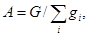
где G - суточный расход горячей воды в системе горячего водоснабжения G, кг, принимается по СНиП 2.04.01-85;
gi - часовая производительность установки, отнесенная к 1 м2 поверхности солнечного коллектора, кг/м2;
i - расчетные часы работы установки.
При неравномерном потреблении горячей воды по месяцам в установках без дублеров расчет площади солнечных коллекторов следует выполнять по величине суточного расхода горячей воды каждого месяца и принимать наибольшую из полученных площадей.
Часовая производительность установки gi, кг/м2, определяется по формуле
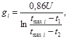
где U - приведенный коэффициент теплопотерь солнечного коллектора, Вт/(м2×К), в случае отсутствия паспортных данных может быть принят 8 Вт/(м2×К) для одностекольных коллекторов и 5 Вт/(м2×К) - для двустекольных;
t1, t2 - температура теплоносителя на входе и на выходе солнечного коллектора, °С
Температура на входе t2 определяется по формуле
t2 = tw2 + 5 °C,
где tw2 - требуемая температура горячей воды.
Температура на входе определяется по формуле
t1 = tw1 + 5 °C,
где tw1 - температура холодной воды.
В одноконтурных системах t1 = tw1 и t2 = tw2.
Равновесная температура каждого часа tmax i определяется по формуле
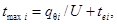
где qqi - приведенная интенсивность поглощенной солнечной радиации, Вт/м2, определяется по прил. 3;
tei - температура наружного воздуха, °С.
Примечание. При отсутствии в технических характеристиках солнечных коллекторов величины солнцепоглощающей поверхности ее следует принимать равной 0,9 - 0,95 габаритной площади коллектора.
4.3. Площадь солнцепоглощающей поверхности коллекторов установок с естественной циркуляцией теплоносителя следует определять по формуле (1), а часовую производительность установки g, кг/м2, по формуле
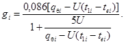
В одноконтурных установках температура на входе t, °C, определяется по формуле
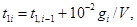
где V - удельный объем бака-аккумулятора (объем бака на 1 м2 площади солнечного коллектора), принимается равным 0,06 для II, 0,07 - для III и 0,08 м3/м2 - для IV климатического района.
В двухконтурных установках температура воды на входе принимается на 5 °С выше, определенной по формуле (5).
В первый час работы установки температура на входе принимается равной температуре воды в баке-аккумуляторе.
4.4. При отклонении солнечных коллекторов от южной ориентации до 15° количество поглощенной радиации снижается на 5 %, при отклонении до 30° - 10 %.
4.5. Площадь солнцепоглощающей поверхности установок с дублером А, м2, следует определять по формуле
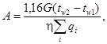
где qi - интенсивность падающей солнечной радиации в плоскости коллектора, Вт/м2, определяется по прил. 3 в интервале от 8 до 17 ч для солнечных коллекторов южной ориентации. При отклонении от юга к востоку или западу на каждые 15° интервал времени начинается раньше или позже на 1 ч;
h - КПД установки солнечного горячего водоснабжения.
Коэффициент полезного действия установки определяется по формуле
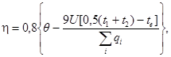
где q - приведенная оптическая характеристика коллектора. При отсутствии паспортных данных может быть принята равной 0,73 для одностекольных коллекторов и 0,63 - для двустекольных;
tе - средняя дневная температура воздуха, °С.
4.6. Если максимальная часовая теплопроизводительность установки солнечного горячего водоснабжения с принудительной циркуляцией выше потребной по графику водоразбора, то в установках необходимо устраивать баки-аккумуляторы. Объем бака-аккумулятора V, м3, должен определяться по суточным графикам подогрева воды в установке и водопотребления, а при их отсутствии в зависимости от климатического района по формуле V = (0,06 - 0,08)A, принимая большее значение для IV климатического района.
4.7. При переменном расходе теплоносителя в теплоприемном контуре и контуре нагреваемой воды подбор насосов производится по максимальной величине расхода. При постоянном расходе теплоносителя его удельный расход должен приниматься в пределах 20 - 40 кг/(м2×ч).
4.8. При проектировании установок с переменным расходом теплоносителя расчет теплообменников следует производить по среднечасовым значениям расходов воды и теплоносителя.
4.9. Расчет экономии топлива за счет использования солнечной энергии В, т у.т/год, следует производить по формуле
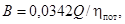
где Q - суммарное количество теплоты Q, ГДж/год, выработанное установкой солнечного горячего водоснабжения за сезон (год), определяемое по прил. 4;
hпот - КПД замещаемого источника теплоты.
Обязательное
Установка солнечного горячего водоснабжения считается экономически целесообразной при выполнении условия
f £ h,
где h - сезонный или годовой коэффициент полезного действия установки солнечного горячего водоснабжения, определяемый по прил. 4;
f - критерий экономической эффективности установки солнечного горячего водоснабжения, определяемой по формуле
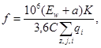
где Ew - нормативный коэффициент эффективности капитальных вложений;
a - норма отчисления на покрытие эксплуатационных расходов (при отсутствии нормативных данных принимать в размере 0,1 от капитальных затрат);
K - удельные капитальные затраты на установку солнечного горячего водоснабжения, руб/м2, солнечных коллекторов;
С - удельная стоимость замещаемой теплоты, руб/ГДж. При f £ h расчет экономической эффективности выполняется по СН 545-82 и СН 547-82.
Рекомендуемое
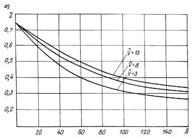
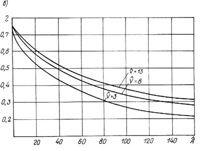
Зависимость сезонного (а) и годового (б)
КПД установки солнечного горячего водоснабжения от величин и 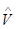
Обязательное
Расчет установки солнечного горячего водоснабжения выполняется по часовым суммам прямой и рассеянной солнечной радиации и температуре наружного воздуха. Величина интенсивности солнечной радиации, температура наружного воздуха принимаются, как правило, по «Справочнику по климату СССР», Гидрометеоиздат, Л., 1966.
Интенсивность падающей солнечной радиации для любого пространственного положения солнечного коллектора и каждого часа светового дня qi, Вт/м2, следует определять по формуле
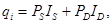
где IS - интенсивность прямой солнечной радиации, падающей на горизонтальную поверхность, Вт/м2;
ID - интенсивность рассеянной солнечной радиации,
падающей на горизонтальную поверхность, 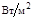
PS, PD - коэффициенты положения солнечного коллектора для прямой и рассеянной радиации соответственно.
Коэффициент положения солнечного коллектора для рассеянной радиации следует определять по формуле
PD = cos2b/2,
где b - угол наклона солнечного коллектора к горизонту.
Коэффициент положения солнечного коллектора PS для прямой солнечной радиации следует определять по таблице данного приложения.
Приведенную интенсивность поглощенной солнечной радиации q, Вт/м2, следует определять по формуле
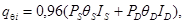
где qS и qD - соответственно приведенные оптические характеристики солнечного коллектора для прямой и рассеянной солнечной радиации. При отсутствии паспортных данных могут быть приняты: qS = 0,74; qD = 0,64 - для одностекольных qS = 0,63; qD = 0,42 - для двустекольных солнечных коллекторов.
Среднемесячные значения PS для солнечных коллекторов южной ориентации при различных углах их наклона к горизонту
|
Угол наклона коллектора к горизонту b, град |
Месяцы |
|||||||||||||||||||
|
I |
II |
III |
IV |
V |
VI |
VII |
VIII |
IX |
X |
XI |
XII |
|||||||||
|
Широта местности 40° |
||||||||||||||||||||
|
25 |
1,76 |
1,49 |
1,30 |
1,13 |
1,04 |
1 |
1,01 |
1,08 |
1,22 |
1,4 |
1,66 |
1,85 |
||||||||
|
40 |
2,24 |
1,72 |
1,36 |
1,11 |
0,97 |
0,90 |
0,93 |
1,03 |
1,24 |
1,55 |
2,03 |
2,45 |
||||||||
|
55 |
2,46 |
1,79 |
1,33 |
1,03 |
0,86 |
0,78 |
0,81 |
0,94 |
1,17 |
1,56 |
2,18 |
2,72 |
||||||||
|
90 |
2,30 |
1,48 |
0,91 |
0 |
0 |
0 |
0 |
0 |
0,75 |
1,17 |
1,96 |
2,61 |
||||||||
|
Широта местности 45° |
||||||||||||||||||||
|
30 |
2,14 |
1,71 |
1,42 |
1,19 |
1,07 |
1,02 |
1,04 |
1,13 |
1,30 |
1,56 |
1,96 |
2,31 |
||||||||
|
45 |
2,86 |
1,99 |
1,49 |
1,17 |
1,00 |
0,92 |
0,95 |
1,08 |
1,33 |
1,74 |
2,47 |
3,27 |
||||||||
|
60 |
3,13 |
2,07 |
1,45 |
1,09 |
0,89 |
0,8 |
0,84 |
0,99 |
1,26 |
1,76 |
2,66 |
3,64 |
||||||||
|
90 |
3,04 |
1,81 |
0,99 |
0,71 |
0 |
0 |
0 |
0 |
0,89 |
1,37 |
2,5 |
3,63 |
||||||||
|
Широта местности 50° |
||||||||||||||||||||
|
35 |
2,77 |
2,01 |
1,57 |
1,27 |
1,11 |
1,05 |
1,08 |
1,19 |
1,42 |
1,79 |
2,44 |
3,12 |
||||||||
|
50 |
4,06 |
2,38 |
1,56 |
1,24 |
1,04 |
0,95 |
0,98 |
1,33 |
1,44 |
2 |
3,22 |
5,27 |
||||||||
|
65 |
4,46 |
2,47 |
1,61 |
1,16 |
0,93 |
0,82 |
0,87 |
1,04 |
1,37 |
2,02 |
3,47 |
5,9 |
||||||||
|
90 |
4,46 |
2,26 |
1,3 |
0,84 |
0 |
0 |
0 |
0,72 |
1,06 |
1,77 |
3,36 |
6,04 |
||||||||
|
Широта местности 55° |
||||||||||||||||||||
|
40 |
4 |
2,47 |
1,79 |
1,37 |
1,17 |
1,09 |
1,12 |
1,26 |
1,56 |
2,11 |
3,27 |
4,91 |
||||||||
|
55 |
3,37 |
2,99 |
1,87 |
1,34 |
1,09 |
0,99 |
1,03 |
1,21 |
1,59 |
2,38 |
4,81 |
5,85 |
||||||||
|
70 |
9,29 |
3,11 |
1,83 |
1,26 |
0,98 |
0,87 |
0,91 |
1,11 |
1,51 |
2,41 |
5,2 |
6,4 |
||||||||
|
90 |
9,52 |
2,95 |
1,57 |
1 |
0,73 |
0 |
0 |
0,84 |
1,26 |
2,2 |
5,17 |
6,45 |
||||||||
|
Широта местности 60° |
||||||||||||||||||||
|
45 |
7,53 |
3,23 |
2,08 |
1,49 |
1,25 |
1,15 |
1,19 |
1,36 |
1,76 |
2,59 |
5,03 |
14,42 |
||||||||
|
60 |
8,85 |
4,11 |
2,18 |
1,46 |
1,16 |
1,04 |
1,09 |
1,30 |
1,80 |
2,96 |
13,71 |
17,29 |
||||||||
|
75 |
9,57 |
4,28 |
2,13 |
1,38 |
1,05 |
1,92 |
0,97 |
1,12 |
1,7 |
3,01 |
15 |
18,99 |
||||||||
|
90 |
9,64 |
4,16 |
1,92 |
1,16 |
0,85 |
0,74 |
0,77 |
1,01 |
1,52 |
2,85 |
15,26 |
19,39 |
||||||||
Обязательное
Годовой (сезонный) КПД определяется по графику в зависимости от площади солнечных коллекторов , м2/(ГДж×сут), и вместимостью бака-аккумулятора , м3/(ГДж×сут), приходящейся на единицу суточной тепловой нагрузки горячего водоснабжения, которые вычисляются по формулам:
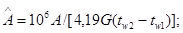
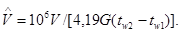
Суммарное количество теплоты Q, ГДж, выработанной установкой, определяется по формуле
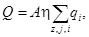
где z - число месяцев работы установки;
j - число дней в месяце.
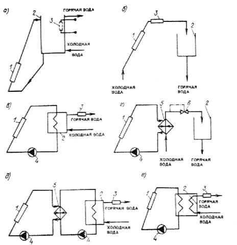
Принципиальные схемы установок солнечного горячего водоснабжения
а) - с естественной циркуляцией; б) - одноконтурная; в) - двухконтурная; г) - двухконтурная с постоянной температурой воды; д) - трехконтурная; е) - с двумя змеевиками в баке-аккумуляторе
1 - солнечный коллектор; 2 - бак-аккумулятор; 3 - дублер нагрева воды; 4 - циркуляционный насос; 5 - теплообменник; 6 - регулятор температуры
Справочное
Дублер - традиционный источник теплоты для догрева воды, полученной в установке солнечного горячего водоснабжения.
Теплоприемный контур - контур, в котором происходит нагрев теплоносителя непосредственно солнечной энергией.
Высота ряда (блока) солнечных коллекторов - разность отметок верхней точки этого ряда и нижней точки последующего ряда солнечных коллекторов.
Приведенный коэффициент теплопотерь солнечного коллектора - произведение коэффициента эффективности коллектора на полный коэффициент потерь.
Приведенная интенсивность поглощенной солнечной радиации - произведение эффективности солнечного коллектора на интенсивность поглощенной радиации.
Коэффициент эффективности солнечного коллектора - отношение фактически поглощенной полезной энергии к полезной энергии, поглощенной в случае, когда температура поглощающей пластины равна температуре жидкости.
Солнцепоглощающая поверхность солнечного коллектора - площадь поверхности солнечного коллектора, через которую передается солнечная энергия теплоносителю.
Приведенная оптическая характеристика солнечного коллектора - произведение коэффициента эффективности коллектора на поглощательную способность пластин коллектора и на пропускательную способность прозрачного покрытия.
Равновесная температура - максимальная температура пластины коллектора при отсутствии полезного отвода теплоты.
СОДЕРЖАНИЕ